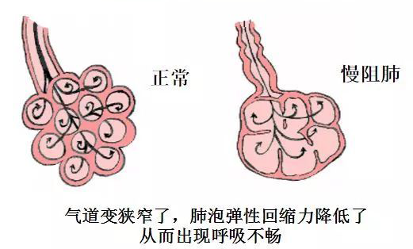
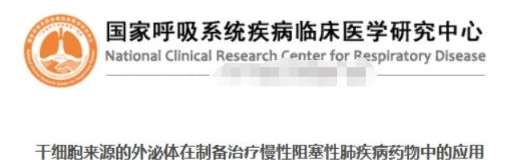
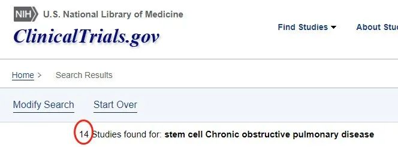
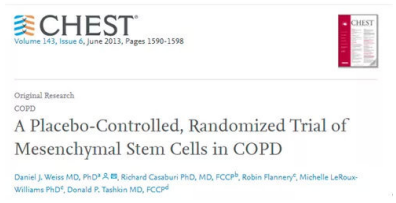
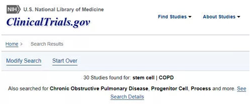
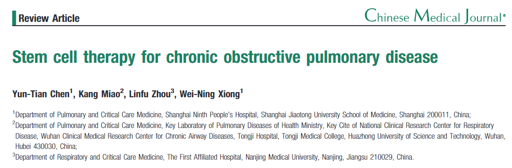
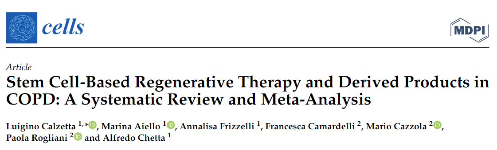
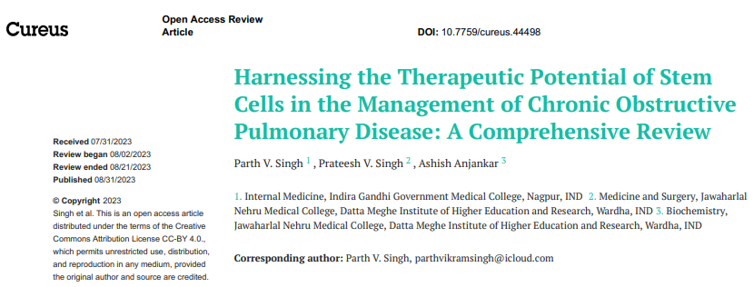

别等身体亮红灯！百年春自体干细胞，为您定制细胞级抗衰防线
2026-03-04

About Us
关于百年春
慢性阻塞性肺疾病(COPD)


干细胞治疗慢阻肺的临床进展
2019年，我国《人自体支气管基底层细胞移植治疗慢性阻塞性肺病的实验性医学研究》干细胞临床研究项目获得备案。2021年6月，据国家药品监督管理局药品审评中心官网公布消息，REGEND001细胞自体回输制剂，获得药监局颁发的《药物临床试验批准通知书》（批件号：CXSL2100091），用于开展针对肺弥散功能障碍的慢性阻塞性肺病（COPD）的临床试验。

目前众多临床研究表明，干细胞治疗COPD安全有效，能够使重症、危重症患者呼吸困难很快得到缓解或者停止加重。干细胞技术不仅在治疗肺部疾病方面展现了巨大的潜力，同时它也正在成为治疗各种疑难性/难治性疾病的新方式。



2012年7月发表在《中医学杂志》上发表了一项研究《干细胞治疗慢性阻塞性肺疾病》综述了历年来。间充质干细胞（MSCs）治疗COPD已发表的临床研究的结果，分析了不同种类的干细胞、不同的细胞来源、不同的给药方式和剂量来治疗COPD的结果 。结论为安全并且表现正面的效果。

2022年5日，《细胞》杂志上发布了一篇标题为“基于干细胞的再生疗法及其衍生产品在慢性阻塞性肺病 (COPD) 中的系统评价和荟萃分析”的研究。这项研究综合评估了11个相关研究，并汇集了总计371名COPD患者的数据进行分析。
研究发现，那些接受了基于干细胞治疗的COPD患者在FEV1（第一秒用力呼气体积）上表现出了明显的提升，相对于治疗前平均增加了约71毫升。更令人鼓舞的是，这些患者在6分钟步行测试（6MWT）中的表现也有了显著的进步，平均步行距离增加了52米，这意味着他们的运动耐受性得到了显著的提高。
总体而言，该研究为我们提供了宝贵的证据，显示基于干细胞的治疗及其相关产品能够为COPD患者带来实质性的益处。

2023年8月，《Cureus》杂志发布了一篇题为《干细胞治疗在慢性阻塞性肺病中的应用：深入探讨》的文章。这篇全面回顾的研究为我们揭示了干细胞在COPD治疗中的诸多机制和优势。如：
1. 组织再生与修复：干细胞可以分化为特定的肺部细胞，例如上皮和内皮细胞，这为修复和再生受损的肺部结构提供了可能。
2. 免疫调控：干细胞，尤其是间充质干细胞，能够调节免疫反应，限制过度的炎症，并促进抗炎环境，这有助于缓解COPD的慢性炎症反应。
3. 抗纤维化作用：干细胞表现出对抗肺纤维化的能力，有助于减少肺部的纤维化程度。
4. 增强血管功能：干细胞可助力新的血管生成，从而改善受损肺组织的血液供应。
5. 旁分泌作用：干细胞能释放各种生物活性分子，如细胞因子、生长因子、趋化因子和细胞外囊泡，促进组织的修复和再生。
6. 抗炎与免疫调节：干细胞能够调控免疫细胞活性，释放如IL-10、TGF-β和PGE2等抗炎因子，进一步减轻COPD中的慢性炎症。
7. 组织再生潜能：除了可以分化为特定的肺部细胞，干细胞还能够激活体内存在的组织干细胞，增强其再生能力。
总结而言，随着对干细胞疗法的进一步探索，干细胞有望成为COPD患者开辟更加有效的治疗路径，帮助他们提高生活质量，并为这一慢性疾病的治疗带来新的希望。